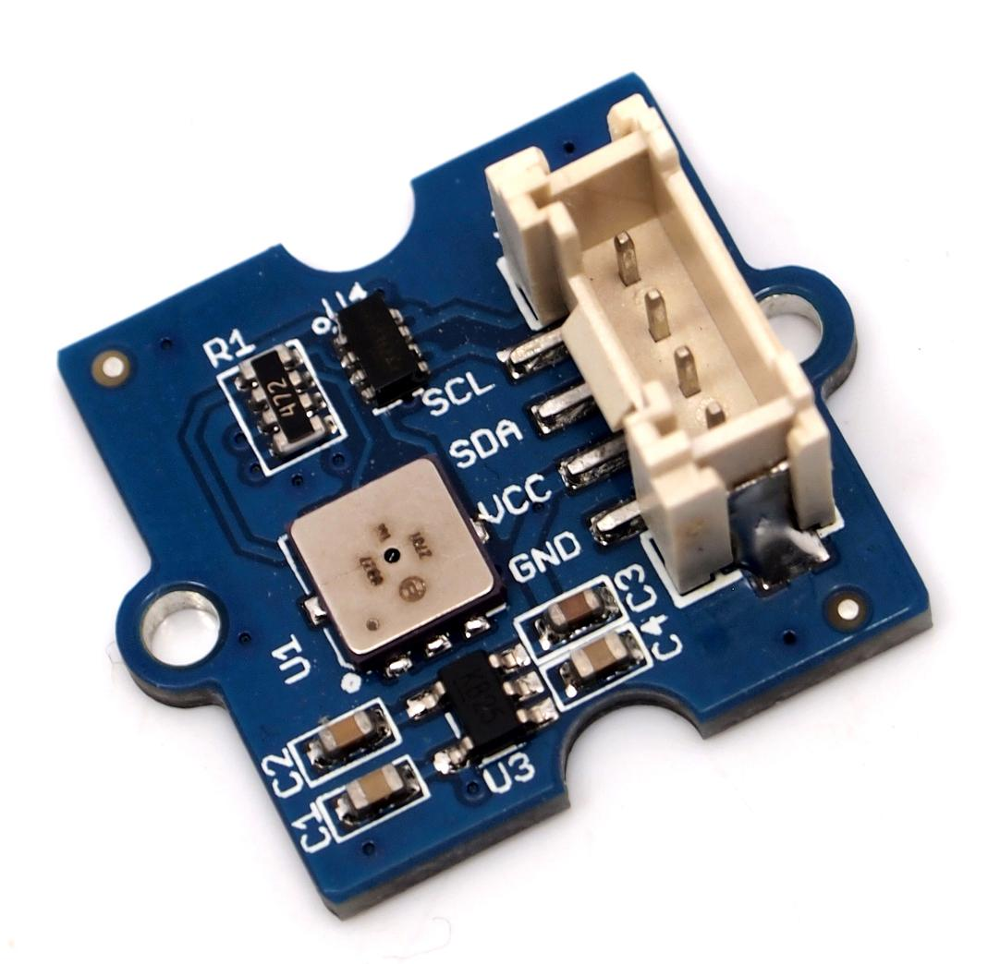
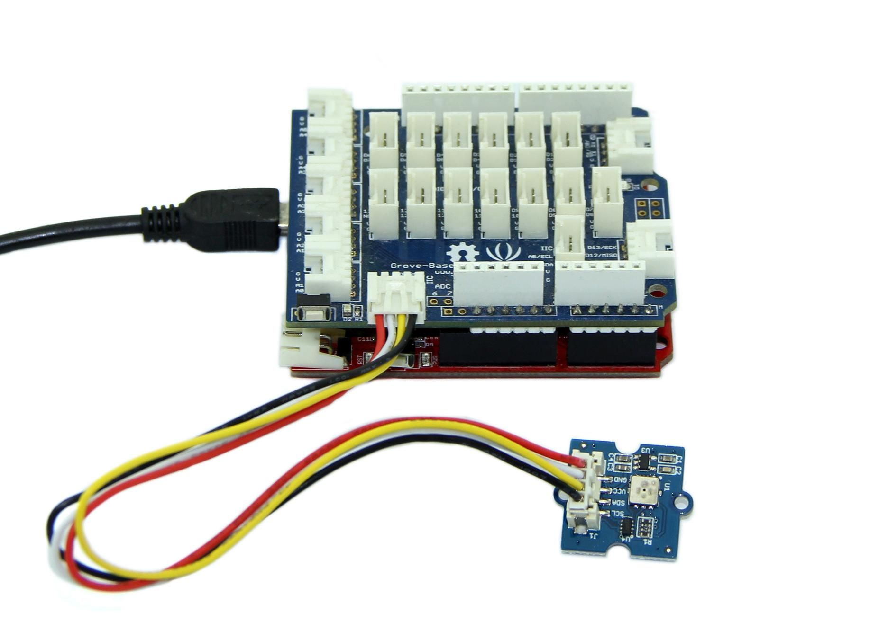
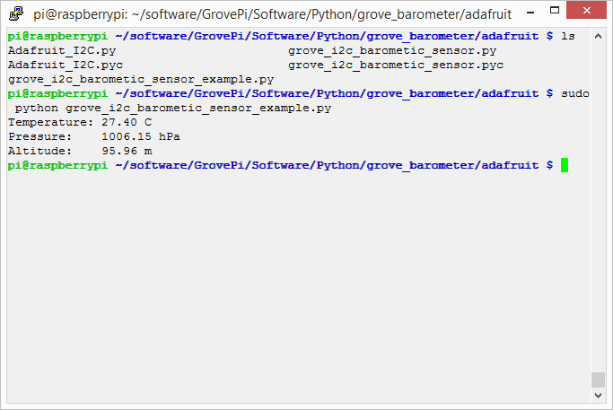

This Grove - Barometer Sensor features a Bosch BMP085 high-accuracy chip to detect barometric pressure and temperature. It can widely measure pressure ranging from 300hPa to 1100hPa, AKA +9000m to -500m above sea level, with a super high accuracy of 0.03hPa(0.25m) in ultra-high resolution mode. The chip only accepts 1.8V to 3.6V input voltage. However, with outer circuit added, this module becomes compatible with 3.3V and 5V. Therefore, it can be used on Arduino/Seeeduino or Seeeduino Stalker without modification. It is designed to be connected directly to a micro-controller via the I2C bus.
Model:SEN05291P

| Item | Min | Typical | Max | Unit |
|---|---|---|---|---|
| Voltage | 3 | 5 | 5.5 | VDC |
| Current | 89 | / | 130 | uA |
| Pressure Range | 300 | / | 1100 | hPa |
| Faster I2C data transfer | / | / | 3.4 | MHZ |
| Dimension | 20.4*24.3*9.7 | mm | ||
| Weight | 2 | g | ||
Barometric condition is one of the criteria used to predict coming change in weather and deduce altitude above sea level. Here is a demo to show you how to read the barometric data from this Grove - Barometer Sensor.
1. Connect it to IIC port of Seeeduino or Grove - Base Shield via a Grove cable. And connect Arduino to PC via a USB cable.

2. Download the library file:Barometer_Sensor Library;Unzip it into the libraries file of Arduino IDE by the path: ..\arduino-1.0.1\libraries.
3. Create a new Arduino sketch and paste the codes below to it or open the code directly by the path:File -> Example ->Barometer_Sensor->Barometer_Sensor.
/* Barometer demo V1.0
* Based largely on code by Jim Lindblom
* Get pressure, altitude, and temperature from the BMP085.
* Serial.print it out at 9600 baud to serial monitor.
*
* By:http://www.seeedstudio.com
*/
#include "Barometer.h"
#include <Wire.h>
float temperature;
float pressure;
float atm;
float altitude;
Barometer myBarometer;
void setup(){
Serial.begin(9600);
myBarometer.init();
}
void loop()
{
temperature = myBarometer.bmp085GetTemperature(myBarometer.bmp085ReadUT()); //Get the temperature, bmp085ReadUT MUST be called first
pressure = myBarometer.bmp085GetPressure(myBarometer.bmp085ReadUP());//Get the temperature
altitude = myBarometer.calcAltitude(pressure); //Uncompensated calculation - in Meters
atm = pressure / 101325;
Serial.print("Temperature: ");
Serial.print(temperature, 2); //display 2 decimal places
Serial.println("deg C");
Serial.print("Pressure: ");
Serial.print(pressure, 0); //whole number only.
Serial.println(" Pa");
Serial.print("Ralated Atmosphere: ");
Serial.println(atm, 4); //display 4 decimal places
Serial.print("Altitude: ");
Serial.print(altitude, 2); //display 2 decimal places
Serial.println(" m");
Serial.println();
delay(1000); //wait a second and get values again.
}
4. Open the serial monitor to receive the sensor's data including temperature, barometric pressure value, relative atmosphere pressure and altitude. 
The following is a reference graph plotting out the relationship between altitude above sea level and barometric pressure.

1.You should have got a raspberry pi and a grovepi or grovepi+.
2.You should have completed configuring the development enviroment, otherwise follow here.
3.Connection
4.Navigate to the demos' directory:
cd yourpath/GrovePi/Software/Python/grove_barometer/adafruit/
nano grove_i2c_barometic_sensor_example.py # "Ctrl+x" to exit #
#!/usr/bin/python
import smbus
import RPi.GPIO as GPIO
#import grovepi
from grove_i2c_barometic_sensor import BMP085
# ===========================================================================
# Example Code
# ===========================================================================
# Initialise the BMP085 and use STANDARD mode (default value)
# bmp = BMP085(0x77, debug=True)
bmp = BMP085(0x77, 1)
# To specify a different operating mode, uncomment one of the following:
# bmp = BMP085(0x77, 0) # ULTRALOWPOWER Mode
# bmp = BMP085(0x77, 1) # STANDARD Mode
# bmp = BMP085(0x77, 2) # HIRES Mode
# bmp = BMP085(0x77, 3) # ULTRAHIRES Mode
rev = GPIO.RPI_REVISION
if rev == 2 or rev == 3:
bus = smbus.SMBus(1)
else:
bus = smbus.SMBus(0)
temp = bmp.readTemperature()
# Read the current barometric pressure level
pressure = bmp.readPressure()
# To calculate altitude based on an estimated mean sea level pressure
# (1013.25 hPa) call the function as follows, but this won't be very accurate
# altitude = bmp.readAltitude()
# To specify a more accurate altitude, enter the correct mean sea level
# pressure level. For example, if the current pressure level is 1023.50 hPa
# enter 102350 since we include two decimal places in the integer value
altitude = bmp.readAltitude(101560)
print "Temperature: %.2f C" % temp
print "Pressure: %.2f hPa" % (pressure / 100.0)
print "Altitude: %.2f m" % altitude
5.Run the demo.
sudo python grove_i2c_barometic_sensor_example.py
6.Result
